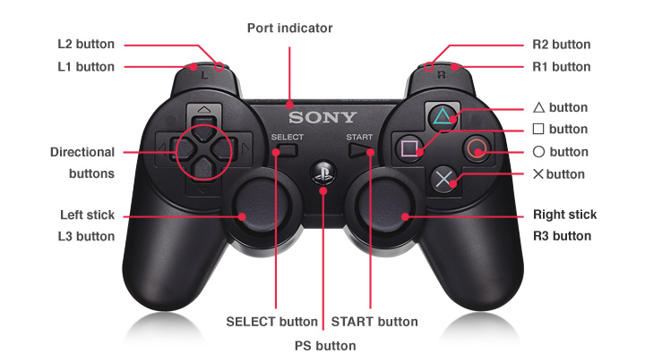

TurtleBot in ROS 2
1. Introduction
The goal for this tutorial:
Simulate TurtleBot in gazebo
Get ideas about how to control physical/simulated TurtleBot
Control Turtlebot from keyboard
The packages that you need for this tutorial:
turtlebot3_gazebo
turtlebot3_teleop
turtlebot3_bringup(on TurtleBot)
Lines beginning with
$indicates the syntax of these commands. Commands are executed in a terminal:Open a new terminal → use the shortcut ctrl+alt+t. Open a new tab inside an existing terminal → use the shortcut ctrl+shift+t.
Info: The computer of the real robot will be accessed from your local computer remotely. For every further command, a tag will inform which computer has to be used. It can be either
[TurtleBot]or[Remote PC].
Please try simulation first and use keyboard to control it.
2. Preparation
2.1. Check packages
Before start, check if there are turtlrbot3* packages
Source ROS workspace first
$ source /opt/ros/foxy/setup.bash
$ ros2 pkg list | grep turtlebot3
If you don’t have turtlebot3 packages, you can install debian packages or from source code.
A. Install debian packages
sudo apt install ros-foxy-turtlebot3*
B. Install from source code
Step 1: Download turtlebot3.repos
First entering your workspace (If you don't have workspace yet, you need to create one with an src folder in it) $ wget https://raw.githubusercontent.com/ipa-rwu/\ turtlebot3/foxy-devel/turtlebot3.repos
Step 2: Using vcstools get packages
Make sure you have “src” folder in you workspace, then run this command to get source code for turtlebot3.
$ vcs import src<turtlebot3.repos
If you didn’t install vcstools, you can install it as followed:
sudo sh -c 'echo \ "deb http://packages.ros.org/ros/ubuntu $(lsb_release -sc) main"\ > /etc/apt/sources.list.d/ros-latest.list'
sudo apt-key adv --keyserver hkp://pool.sks-keyservers.net \ --recv-key 0xAB17C654
sudo apt update && sudo apt install python3-vcstool
Step 3: Using rosdep get dependencies
$ rosdep update $ rosdep install --from-paths src --ignore-src -y
Step 4: Install packages
$ colcon build --symlink-install
Step 5: Source your workspace
$ source install/setup.bash
3. Simulation
In this chapter you will learn how to simulate TurtleBot in gazebo
Open a terminal
If you don’t set up ROS Domain ID, then the default ROS_DOMAIN_ID=0.
In this case, we only work with one turtlebot so we can use default ROS Domain ID.
If you want to use different ROS Domain ID, you can perform:
$ export ROS_DOMAIN_ID=11
Set up ROS environment arguments
If you use debian packages,
$ source /opt/ros/foxy/setup.bash
If you use packages in your workspace:
First entering your workspace $ source install/setup.bash
Set up turtlebot model
$ export TURTLEBOT3_MODEL=burger
Set up Gazebo model path
$ export GAZEBO_MODEL_PATH=$GAZEBO_MODEL_PATH:`ros2 pkg \ prefix turtlebot3_gazebo \ `/share/turtlebot3_gazebo/models/
Launch Gazebo with simulation world
$ ros2 launch turtlebot3_gazebo empty_world.launch.py
You also can start different world by replacing
empty_world.launch.pywithturtlebot3_house.launch.py
You can check ros topics and ros graph.s
4. Control the robot
In this chapter you will learn how to use keyboard or joystick to control robot. In general we will start a ros node that will publish to topic /cmd_vel
4.1. Keyboard
Open a new terminal
Set up ROS environment arguments
(Set up ROS_DOMAIN_ID): Only if you set up ROS_DOMAIN_ID in chapter3
Set up turtlebot model
$ export TURTLEBOT3_MODEL=burger
Run a teleoperation node
$ ros2 run turtlebot3_teleop teleop_keyboard
If the program is successfully launched, the following output will appear in the terminal window and you can control the robot following the instruction.
Control Your TurtleBot3!
---------------------------
Moving around:
w
a s d
x
w/x : increase/decrease linear velocity (Burger : ~ 0.22, Waffle and Waffle Pi : ~ 0.26)
a/d : increase/decrease angular velocity (Burger : ~ 2.84, Waffle and Waffle Pi : ~ 1.82)
space key, s : force stop
CTRL-C to quit
4.2. PS3 Joystick
First of all, connect the given PS3 Joystick to the remote PC via the USB cable and install required packages for teleoperation using PS3 joystick.
$ sudo pip install ds4drv
$ sudo ds4drv
$ ros2 run joy joy_node
$ ros2 run teleop_twist_joy teleop_node
Button map

Enable regular-speed movement button: L2 shoulder button
Enable high-speed movement: L1 shoulder button
You can use Joystick axis and joystick angular axis to control turtlbot.
5. Physical TurtleBot3
In this chapter you will learn how to use physical TurtleBot
5.1. Setting up to a turtlebot ROS 2 Network
Info: The computer of the real robot will be accessed from your local computer remotely. For every further command, a tag will inform which computer has to be used. It can be either [TurtleBot] or [Remote PC].
As the robot you are using does not have any input devices or monitor, we have to start it in another way. Luckily we can work remotely from a local workstation using SSH. SSH provides a secure communication channel over an unsecured network in a client-server architecture. It connects an SSH client application with an SSH server.
To establish a connection to a computer remotely, the username and the IP address of the remote computer must be known. Additionally, both the computer must be connected to the same network. In our case, every TurtleBot has a <TB-user>, a <TB-password> and an <TB-IP> address that can be found at the robot. First of all, you should check if you can ping the computer of the TurtleBot. This ensures that both machines are in the same network.
[Remote PC]
$ ping <TB-IP>
You should see something like:
64 bytes from 192.168.1.75: icmp_seq=1 ttl=64 time=0.062 ms
64 bytes from 192.168.1.75: icmp_seq=2 ttl=64 time=0.056 ms
64 bytes from 192.168.1.75: icmp_seq=3 ttl=64 time=0.050 ms
64 bytes from 192.168.1.75: icmp_seq=4 ttl=64 time=0.050 ms
If this check has been successful one can connect remotely to the TurtleBot with the command:
[Remote PC]
$ ssh <TB-userName>@<TB-IP>
You will be asked to enter the password of the remote account, which is the one retrieved at the robot ( TB-password ). After the connection is established, the same terminal should show the following line:
$ <TB-userName>@<TB-IP>
This means you are working from the home directory of the TurtleBot. So you can start applications running on the processor of the robot. All commands that will have to be entered during this tutorial in this terminal, will be labelled with a [TurtleBot] tag.
Hint: You can disconnect the ssh connection by typing “exit” or “Ctrl + D” in the terminal.
5.2. Bring up the TurtleBot
Before running any ROS command, you need to source the workspace first. In this case, you will find environment variables are defined in the file $HOME/.bashrc. So you can run the command below to set up environment variables and source the workspace.
[TurtleBot3]
$ source .bashrc
Bring up the robot with the following launch-file:
[TurtleBot3]
$ ros2 launch turtlebot3_bringup robot.launch.py
Afterwards, you can again check the nodes within a terminal of the local machine to see which applications are running within the same ROS Network.
Hint: The ROS 2 DOMAIN ID of TurtleBot must be exported on every new terminal of the [Remote PC]!
[Remote PC]
$ export ROS_DOMAIN_ID = <ROS_DOMAIN_ID of TurtleBot>
[Remote PC]
$ ros2 node list
You can check all existing topics of the system:
[Remote PC]
$ ros2 topic list
You can as well check all existing service of the system:
$ ros2 service list
You can as well check tf:
$ ros2 run tf2_ros tf2_monitor
Then you also can use keyboard or joystick as you control TurtleBot in simulation to control real TurtleBot